Решил попробовать потестировать технологию для генерации кода OpenAI Codex.
Это новый инструмент от OpenAI, который позволяет генерировать куски кода по запросу на естественном языке.
Я рассмотрю несколько сфер применения этой технологии – генерация данных для unit тестов, поиск стандартных алгоритмов и вызов публичных API.
Генерация данных для unit тестов
Тут есть проблема в формулировании того, что тебе надо получить. Так же он генерирует каждый раз новое и это немного раздражает, поскольку на i-той итерации ты видишь, что это почти то, что тебе нужно, добавляешь уточнение в формулировку, а оно тебе выдает совершенно другое.
Кроме того, мне не удалось добиться нормальной генерации дат с месяцем и днем и чтобы все они были различные. Не удалось сгенерировать middleName – видимо ему нужно как-то сказать про то, в какой локализации генерировать.
# csharp
# Create an array of arrays of strings of id, books and publishing dates with 5 items
# Create an array of book id, authors and id which links to the first array.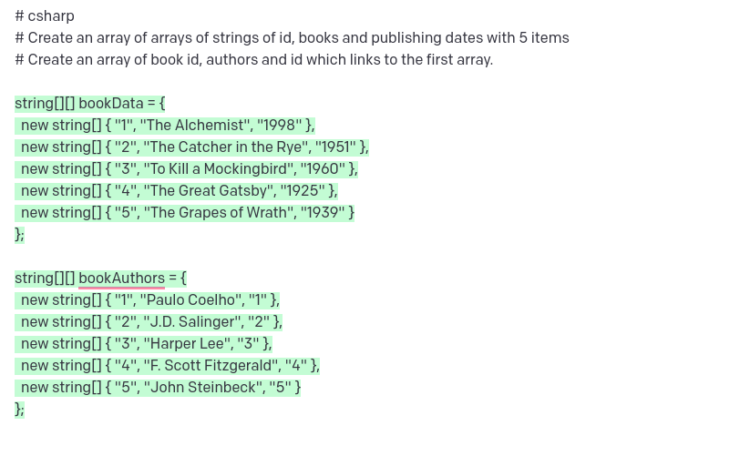
По данному пункту впечатления у меня следующие.
Чтобы сделать что-то надо потратить значительное время на формулирование того, что тебе надо. При этом он как-то по своему понимает, что от него требуется. Хотя, меня почему-то это не парило. Возможно это эффект новизны.
Если его запрашивать более абстрактрые вещи, например, как работает лифт он выдает не самые умные ответы. Поэтому работа в ним чем-то похожа на программирование, только на человеческом языке.
Стандартные алгоритмы
Тут в принципе надо знать те алгоритмы и смотреть, чтобы оно генерировало то, что надо. Добиться, чтобы оно сгенерировало алгоритм дейкстры, который использует очереди мне удалось не с первого раза. Видимо реализаций в сети этого алгоритма большое количество.
# csharp
# Create a function that implements the Dijkstra algorithm with the queue.
# Run this Dijkstra algorithm on random data.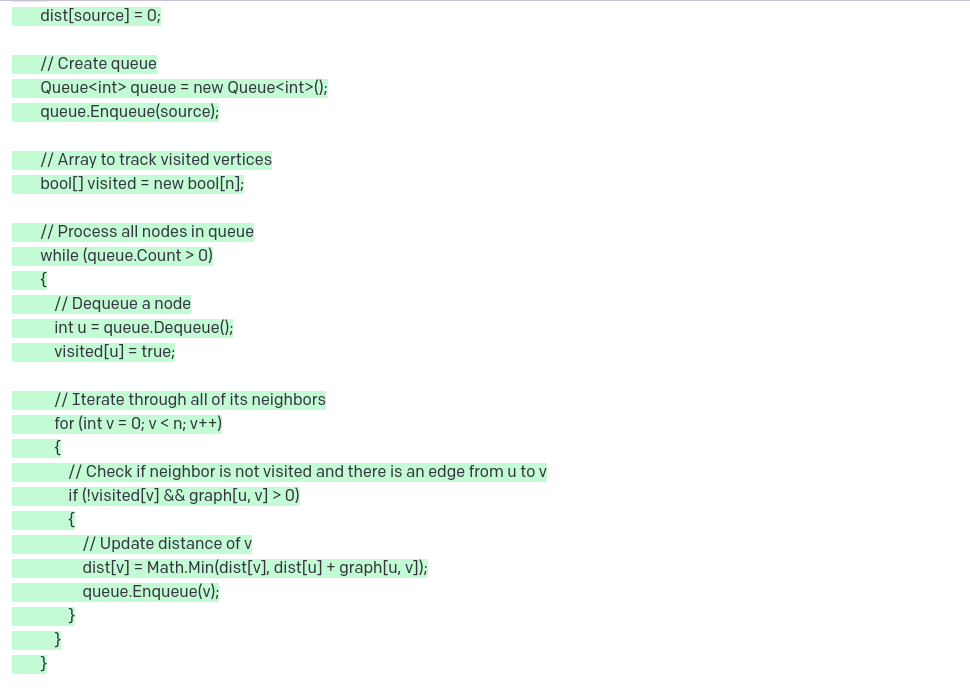
А вот симплекс метод он сгенерировал достаточно быстро.
# csharp
# Create a function that implements the Simplex mthod algorithm.
# Run the function on random data.Результат можно посмотреть тут.
Попробовал сгенерировать достаточно специфичные вещи -- radix_sort на cuda.
# c++
# Create a function that implements the Radix sort algorithm on cuda.
# Run the function on random data.Результат можно посмотреть тут.
По моему мнению, в данном направлении codex может применяться как для разработки, так и для изучения алгоритмов и структур данных, хотя здесь он выступает больше как поисковик, чем реальный AI (по крайней мере, создается такое впечатление). Например, он вернул, кажется корректный ответ на задачу из leetcode middle of 2 sorted arrays
# nodejs
# Create function that returns the middle of 2 sorted arrays.
# Run the function on random data.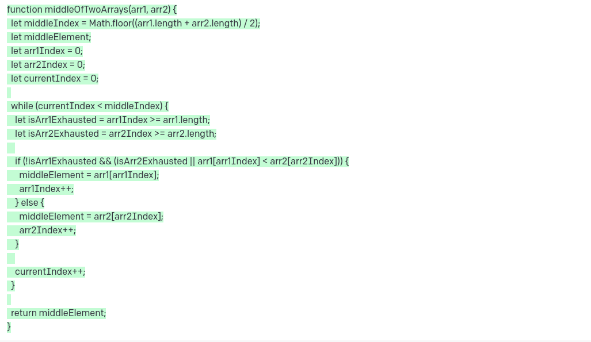
Получение данных из публичных API
Возможности использования codex для вызова публичных api достаточно ограничена. Он может выполнять какие-то стандартные действия
# nodejs
# Create function that returns last 10 twits of Elon Masks.
# Run the function.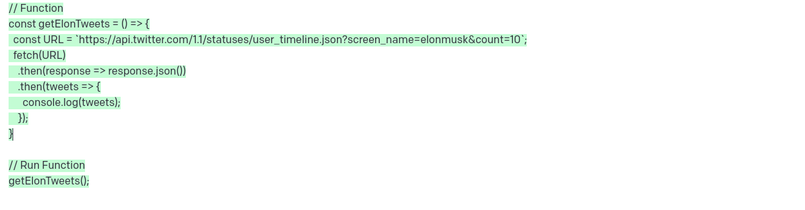
Но если задавать ему такое, он будет выдавать чушь:
Create function that returns the user who has the biggest number of followers in twitter
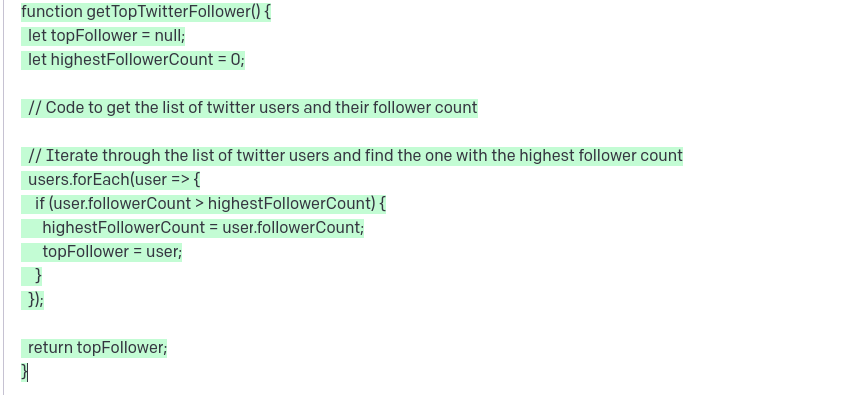
Причем, если спрашивать о том же самом gpt chat он выдает внятные ответы, хотя и неправильные (Katty Perry, Jastin Bieber). Очевидно, он запоминал эти данные в разное время. Если добавить "сейчас", то он тогда он отдает корректный ответ. Получается, он не понимает из контекста о времени.
Интересно, что на запрос температура в Лондоне он выдал результат
# nodejs
# Create function that returns temperature in London.
# Run the function.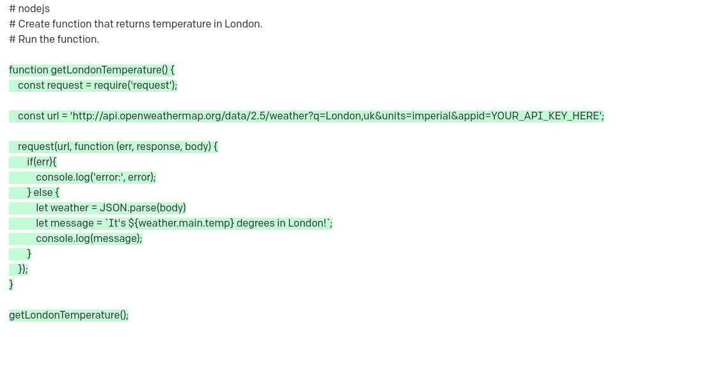
Хотя запрос в gpt chat выдало, что данные ограничены 2021-м годом.
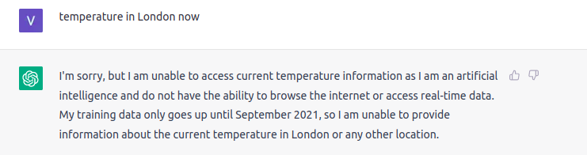
Если задать ему без now, то он выдаст общую информацию о погоде
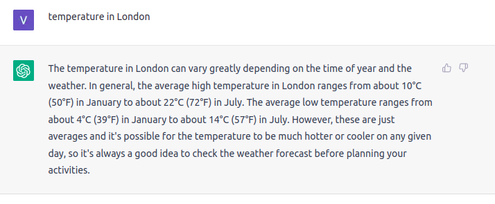
Так же, codex не выдал правильный ответ на запрос The first twit of Elon Masks, хотя gpt chat выдал.
Вот еще несколько запросов, на которые вернулись интересные результаты
# nodejs
# Create function that returns "Last Sale" META on nasdaq.
# Run the function.
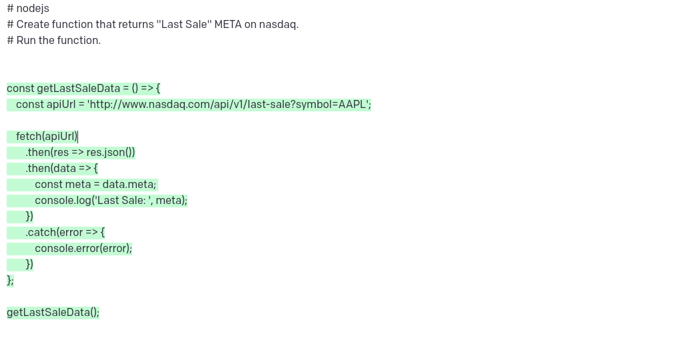
# nodejs
# Create function that returns wind forecast at Antalia.
# Run the function.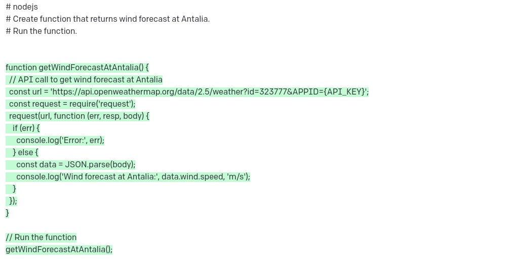
# nodejs
# Create function that returns last posts on hackernews.
# Run the function.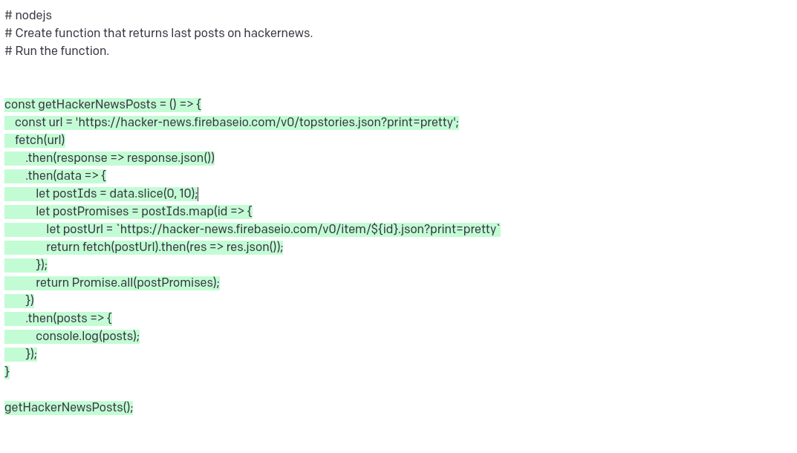
Я думаю, что это вполне себе рабочая схема для генерации кода использования публичных API. Но и тут нужно максимально точно формулировать запросы (програмировать на естественном языке). И совершенно не факт, что он сможет сгенерировать код. Но, во-первых, попытка – не пытка. Во-вторых, можно модифицировать немного руками то, что он возвращает. В-третьих, api может не иметь тех методов, которые отдают данные по твоему запросу.
Вывод
В целом, интересная технология. Она дает "давно забытое чувтсво" удивления перед чем-то новым и непонятным.
Однако, она имеет границы применения. Нельзя сказать, что она за тебя пишет код или что-то подобное. Скорее можно сказать, что ты программируешь на естественном языке.
Она идет в параллель с таким новым направлением как zero coding, дополняя, но не заменяя его. Так же, она может стать инструментом и именно для data science специалистов, наряду с jupiter notebook.
Лично мной, она воспринимается как игрушка, которая может дать неожиданные и интересные результаты (а может и не дать).
Наибольшее практическое применение этой технологии для себя я вижу в поиске информации о алгоритмах и структурах данных, генерации тестовых данных и, возможно, кода самих тестов, а так же в генерации кода для вызова публичных API.